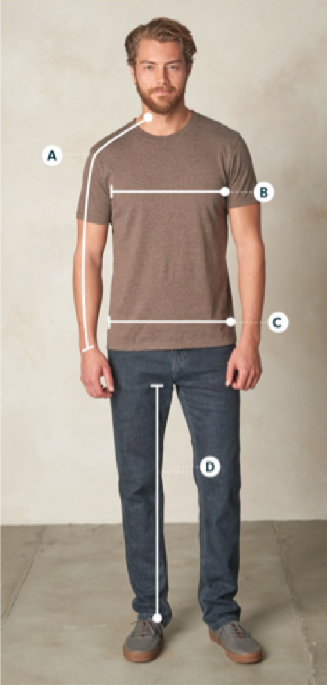

Vassar Trans Resources
Binding
Packing
Jeans/Pants that work well for transmasculine people
- Levi's 510 or athletic
- American Eagle 360 flex slim straight cut
- Boyfriend jeans from the women's section
- Slim-straight or athletic fit from the men's section
Shoes
- To find your men's shoe size, subtract 1.5 or 2 from your women's shoe size
- Look in the boy's section, if you're a women's size 8 or below they'll have shoes that fit you
How to measure yourself

A = Arm length
B = Chest width (wrap around your whole body)
C = Waist (wrap around your whole body)
D = Inseam (from your upper thigh to your ankle bone)